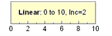

平行座標プロットの軸ダイアログは、固有の軸プロパティをカスタマイズするコントロールを提供しています。ダイアログの右側にあるタブの設定は、ダイアログの左側で選択された軸に適用されます。各軸は個別に設定できますが、左側のパネルでCTRLまたはSHIFTキーを押しながら複数の軸を選択すると、全てに設定内容を適用できます。
このチェックをつけると、各軸スケール範囲は変数の最大値と最小値で決定されます（スケールタブの開始と終了）。これにより、データポイントを軸に沿って最大限に分散させることができます。このチェックを外すと、すべての軸が共通になり、値の最大範囲を軸スケールとします。
デフォルトではこの値は0で、データポイントを軸に沿って最大限に分散させることができます。数値nを入力して、軸の両端にn%の軸スケール距離が追加されます。これは、開始と終了の値を変更しません。
このテキストボックスに開始値をセットします。
このテキストボックスに終了値をセットします。
| 線形 | 標準的な線形スケール、 X'=X  |
|---|---|
| 常用対数Log10 | 常用対数スケール（底が10の対数）、 X'=log(X)
|
| 固定 | これを指定すると軸を再スケールすることはできません。 スケールを直接変えたり、スケールに変更をきたすような操作 (例えば、軸スケールの拡大ボタン |
|---|---|
| ノーマル | 軸を再スケールすることが可能です。 スケールを変更したり、(2Dグラフレイヤで)「軸スケールの拡大ボタン 作図のセットアップ またはレイヤ管理 ダイアログでグラフからデータセットを追加または削除する場合、再スケール のチェックボックスにチェックを入れて、データの変更に合わせてスケールを調整します。 |
| 自動 | この方式はノーマルと同様、ユーザがスケールの変更をすることを許しますが、さらに、Originが必要に応じて、軸をデータ全体が表示されるように自動的に再スケールすることを許します。 |
| 固定開始 - ノーマル終了 | 軸ダイアログボックスで、軸の開始 の値は固定され、終了 の値がノーマル モードの場合、開始 テキストボックスでの編集のみにより変更出来ます。 |
| ノーマル開始 - 固定終了 | 軸の開始 の値が ノーマル モードの場合、軸の終了 の値は固定され、軸ダイアログの終了 テキストボックスでの編集のみにより変更できます。 |
| 固定開始 - 自動終了 | 開始 の値が固定され、軸の終了 の値は自動的に再スケールされます。 |
| 自動開始 - 固定終了 | 軸の開始 は自動的に再スケールされ、終了 値は固定されます。 |
軸と軸目盛タブの主目盛のスタイルは、なし以外のオプションに設定する必要があります。
| 増分 | 付随するテキストボックスにnを指定して、n個のスケール単位ごとに主目盛を付けます。主目盛ラベルは主目盛に表示されます。任意で副目盛数を指定します。 |
|---|---|
| 主目盛の数 | 付随するテキストボックスにmを指定して、軸スケールにm個の主目盛を付けます。主目盛ラベルは主目盛に表示されます。任意で副目盛数を指定します。 |
| 最小＆最大 | 最小(開始)と最大(終了)のスケール値の位置にのみ主目盛をつけます。並行座標プロットでは、これがデフォルトの設定となります。 |
隣り合う主目盛間に表示される副目盛の数をセットします。軸と軸目盛タブの副目盛のスタイルは、なし以外のオプションに設定する必要があります。
目盛ラベルタブの設定は、表示タブとフォーマットタブに分かれています。
このチェックボックスを使用して、軸の前後の目盛ラベルを配置するか、ラベル非表示（なし）にするかを指定します。
副目盛マークのラベル表示を有効にします。
| 十進数:1000 |
(1, 1000, 1000000, 1.00E+009) Note: 『指数表記への表記変更の契機』となるしきい値は、｢オプション｣ダイアログボックス（環境設定：オプション）の数値の表現形式タブ内で指定します。 |
|---|---|
| 科学的：10^3 | (1*100, 1*103, 1*106, 1*109) |
| 工学:1k | (1.0, 1.0k, 1.0M, 1.0G)
サポートしている工学データの接尾辞については下の * をご覧下さい。 Note:LabTalkのシステム変数 (@EF)を使うと、工学列ではない列に工学表記を使うことができます。例えば、@EF = 1 と設定すると、工学列ではない列に工学表記を入力することができ、入力を数値として扱います。@EF = 0 であれば、入力を文字として扱います(デフォルト)。 |
| 十進数:1,000 | (1, 1,000, 1,000,000, 1,000,000,000)
Note: 『指数表記への表記変更の契機』となるしきい値は、｢ オプション｣ダイアログボックス（環境設定：オプション）の数値の表現形式タブ内で指定します。 |
| 科学的:1E3 | (1E0, 1E3, 1E6, 1E9)
Note:LabTalkのシステム変数(@ete)を使って、科学的表記の先行0を非表示にします。1E+00, 1E+03, 1E+06, 1E+09のように、値はデフォルトで0に設定されています。@ete=1を設定すると、科学的表示の先行0を非表示にして、値を(1E+0, 1E+3, 1E+6, 1E+9)として表記します。 |
| カスタム | ユーザ定義の目盛ラベルフォーマットを指定します。例えば、有効桁数や小数点位置などを指定するのに使用します。カスタムフォーマットコンボボックスを使用して、ドロップダウンから、オプションを選択または入力します。 |
| 接尾辞 | 意味 | 大きさ |
|---|---|---|
| k | キロ | 10^3 |
| M | メガ | 10^6 |
| G | ギガ | 10^9 |
| T | テラ | 10^12 |
| P | ペタ | 10^15 |
| m | ミリ | 10^-3 |
| u | マイクロ | 10^-6 |
| n | ナノ | 10^-9 |
| p | ピコ | 10^-12 |
| f | フェムト | 10^-15 |
|
Note: 「u」は、Originのマイクロに対する普遍的な表記です。 例外は、グラフの軸目盛ラベルです。これには「mu」を使います。 Origin 7 では、接尾語として、Eおよびaをサポートしていません。 |
表示する小数点以下の桁数を桁数編集ボックスで指定します。
小数点以下の桁数の設定がチェックされているとき、表示する小数点桁数を整数で指定できます。
このテキストボックスに数値が入っていると、(主/副の)目盛ラベルは、その数で割られます。このテキストボックスに式を入力することもできます。例えば、すべてのラベルを1/3で割るには、テキストボックスに1/3と入力します（これによりすべてのラベルが3倍されます）。
主目盛ラベルの表示に付加される接頭語をこのテキストボックスに入力します。
主目盛ラベルの表示に付加される接尾語をこのテキストボックスに入力します。（例：mm、ｍF、Kなど）
『ラベル接尾語』と『ラベル接頭語』テキストボックスは、エスケープシーケンスと呼ばれる特殊フォーマットコマンド(上付き文字やギリシャ文字など)をサポートします。例えば、ギリシャ文字の小文字 "p" (π)シンボルを各ラベルに付加するには、このボックスに |
目盛ラベルの前に正の記号を表示するには、正の記号にチェックを付けます。
目盛ラベルの前に負の記号を表示するには、負の記号にチェックを付けます。
このドロップダウンリストから希望の目盛ラベルの色を選びます。自動を選択すると、目盛ラベルの色は軸の色と同じ色になります。
カスタムカラー定義を含むカラーチューザーに関する情報は、カスタムカラーの定義と利用をご参照ください。
| フォント | このドロップダウンリストから、希望の目盛ラベルフォントを選びます。 |
|---|---|
| サイズ | 主軸と副軸目盛ラベルのテキストサイズを入力または選択します。 |
| 太字 | 主目盛ラベルと副目盛ラベルを太字にするには、このチェックボックスにチェックをします。 |
| 白地 | 目盛ラベルのテキスト用の白地を描く選択をします。 |
Originでは、目盛ラベルを回転して表示することが可能です。テキストボックスに正の数を入力するとラベルは反時計回りに回転し、負の数を入力するとラベルは時計回りに回転します（Originは入力された負の数を対応する正の数に変換して回転させます）。
3つのオプションから選択して、目盛に対して目盛ラベルをどの位置に配置するか指定します。
| 中央 | 目盛ラベルは主刻みに中心を揃えて置かれます。 |
|---|---|
| 刻み間の中央 | 等距離に隣り合った主目盛の間に目盛ラベルを表示します。 |
| 刻みの横 | 目盛ラベルの左端を軸の主刻みに揃えます。 |
軸に対する目盛ラベルの相対的な位置を、水平と垂直のテキストボックスに入力してください（100% =フォントの幅）。
Note:軸目盛ラベルを少しずつ動かすには、ラベルを選択し、キーボードの矢印キーで行います。これは特別な目盛ラベルにも適用されます。
軸と目盛ラベルを常に隣接させるには、このチェックボックスにチェックをします。このチェックボックスがチェックされていない場合、軸の位置を変更してもラベルは元の位置に残ってしまいます。
クリックして目盛ラベルを選択し、キーボードの矢印キーを使用してそれらを微調整することができます。 |
選択した軸のタイトルを表示します。
軸タイトルのデフォルトは、%(?Y)です。これは、指定されたプロットのY列の「ロングネーム（なければショートネーム）+単位」を表示します。軸タイトルは、ロングネーム/ショートネームおよび単位以外のワークシート列ラベル行の情報を使って作成され、例えば、Y列の第一ユーザ定義パラメータを値を使用するには、 %(?Y, @LD)を入力します。詳細は@オプションの完全なリスト を参照してください。
カスタマイズをテンプレートファイルに保存する場合は、上記の表記法を使用することをお勧めしますが、（a）このテキストボックスに軸タイトルテキストを入力するか、（b）グラフページの軸タイトルオブジェクトに直接入力することもできます。
ロングネーム+単位を表示するために |
このドロップダウンリストから、タイトルの色を選択します。カスタムカラーの定義と使用を参照
Originでは、タイトルを回転して表示することが可能です。タイトルを反時計周りに回転させるには、正の値を入力しまたは選択します。時計周りに回転させるには、負の値を入力または選択します。
フォント：ドロップダウンリストからフォントを選択します。
サイズ：コンボボックスに軸のタイトルサイズを指定します。
表示：主グリッド線を表示するには、表示チェックボックスにチェックをします。主グリッド線とは、各軸の主目盛から引かれる直線のことです。
色：ドロップダウンリストから、線の色を選択してください。カスタムカラーの定義と使用を参照
スタイル：ドロップダウンリストから、線のスタイルを選択してください。
太さ：太さコンボボックスで、線の太さをポイント単位で指定します。1ポイント = 1/72インチ = 0.0353 mmです。
表示：このチェックボックスを選択して、選択されている軸の線を表示します。
色：このドロップダウンリストから軸と軸目盛の色を選択します。カスタムカラーの定義と使用を参照
太さ：のコンボボックスで軸および軸刻みに対する線の太さ(ポイント単位、1ポイント＝1/72インチ)を入力または選択します。
矢印：軸の開始または終了の位置に矢印を表示します。
| 形状 | このドロップダウンリストから矢印の形状を選択します。 |
|---|---|
| 幅 | 値を入力、またはこのコンビネーションボックスからポイントで示された希望のフォントサイズを選択します。 |
| 長さ | このコンボボックスで副目盛の長さ(ポイント単位、1ポイント＝1/72インチ)を入力または選択します。 |
| オフセット(%) | 値を入力、またはこのコンビネーションボックスから軸の終了に関連した矢印の位置を選択して制御します。 |
スタイル：このドロップダウンリストで主（副）目盛のスタイルを指定します。
長さ：のコンボボックスで主/副目盛の長さ(ポイント単位、1ポイント＝1/72インチ)を入力または選択します。
自動: 副目盛は、主目盛の半分の長さになります。
色：ドロップダウンリストで主/副刻みの色を指定します。カスタムカラーの定義と使用を参照
太さ：このコンボボックスで主/副目盛の太さ(ポイント単位、1ポイント＝1/72インチ)を入力または選択します。